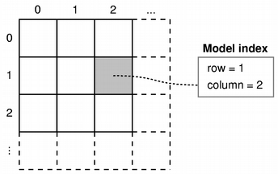

| Home · All Classes · Main Classes · Grouped Classes · Modules · Functions |
The QAbstractItemModel class provides the abstract interface for item model classes. More...
#include <QAbstractItemModel>
Inherits QObject.
Inherited by QAbstractListModel, QAbstractTableModel, QDirModel, QProxyModel, and QStandardItemModel.
The QAbstractItemModel class provides the abstract interface for item model classes.
The QAbstractItemModel class defines the standard interface that item models must use to be able to interoperate with other components in the model/view architecture. It is not supposed to be instantiated directly. Instead, you should subclass it to create new models.
The QAbstractItemModel class is one of the Model/View Classes and is part of Qt's model/view framework.
If you need a model to use with a QListView or a QTableView, you should consider subclassing QAbstractListModel or QAbstractTableModel instead of this class.
The underlying data model is exposed to views and delegates as a hierarchy of tables. If you don't make use of the hierarchy, then the model is a simple table of rows and columns. Each item has a unique index specified by a QModelIndex.

Every item of data that can be accessed via a model has an associated model index that is obtained using the index() function. Each index may have a sibling() index; child items have a parent() index.
Each item has a number of data elements associated with it, and each of these can be retrieved by specifying a role (see Qt::ItemDataRole) to the model's data() function. Data for all available roles can be obtained at the same time using the itemData() function.
Data for each role is set using a particular Qt::ItemDataRole. Data for individual roles are set individually with setData(), or they can be set for all roles with setItemData().
Items can be queried with flags() (see Qt::ItemFlag) to see if they can be selected, dragged, or manipulated in other ways.
If an item has child objects, hasChildren() returns true for the corresponding index.
The model has a rowCount() and a columnCount() for each level of the hierarchy. Rows and columns can be inserted and removed with insertRows(), insertColumns(), removeRows(), and removeColumns().
The model emits signals to indicate changes. For example, dataChanged() is emitted whenever items of data made available by the model are changed. Changes to the headers supplied by the model cause headerDataChanged() to be emitted. If the structure of the underlying data changes, the model can emit layoutChanged() to indicate to any attached views that they should redisplay any items shown, taking the new structure into account.
The items available through the model can be searched for particular data using the match() function.
If the model is sortable, it can be sorted with sort().
When subclassing QAbstractItemModel, at the very least you must implement index(), parent(), rowCount(), columnCount(), hasChildren(), and data(). To enable editing in your model, you must also implement setData(), and reimplement flags() to ensure that ItemIsEditable is returned.
You can also reimplement headerData() and setHeaderData() to control the way the headers for your model are presented.
Custom models need to create model indexes for other components to use. To do this, call createIndex() with suitable row and column numbers for the item, and supply a unique identifier for the item, either as a pointer or as an integer value. Custom models typically use these unique identifiers in other reimplemented functions to retrieve item data and access information about the item's parents and children. See the Simple Tree Model example for more information about unique identifiers.
Models that provide interfaces to resizable data structures can provide implementations of insertRows(), removeRows(), insertColumns(), and removeColumns(). When implementing these functions, it is important to notify any connected views about changes to the model's dimensions both before and after they occur:
The signals that these functions emit give attached components the chance to take action before any data becomes unavailable. The encapsulation of the insert and remove operations with these begin and end functions also enable the model to manage persistent model indexes correctly. If you want selections to be handled properly, you must ensure that you call these functions.
See also Model/View Programming, QModelIndex, and QAbstractItemView.
Constructs an abstract item model with the given parent.
Destroys the abstract item model.
Begins a column insertion operation.
When reimplementing insertColumns() in a subclass, you must call this function before inserting data into the model's underlying data store.
The parent index corresponds to the parent into which the new columns are inserted; first and last are the column numbers of the new columns to be inserted.
See also endInsertColumns().
Begins a row insertion operation.
When reimplementing insertRows() in a subclass, you must call this function before inserting data into the model's underlying data store.
The parent index corresponds to the parent into which the new rows are inserted; first and last are the row numbers of the new rows to be inserted.
See also endInsertRows().
Begins a column removal operation.
When reimplementing removeColumns() in a subclass, you must call this function before removing data from the model's underlying data store.
The parent index corresponds to the parent from which the new columns are removed; first and last are the column numbers of the columns to be removed.
See also endRemoveColumns().
Begins a row removal operation.
When reimplementing removeRows() in a subclass, you must call this function before removing data from the model's underlying data store.
The parent index corresponds to the parent from which the new rows are removed; first and last are the row numbers of the rows to be removed.
See also endRemoveRows().
Returns a model index for the buddy of the item represented by index. When the user wants to edit an item, the view will call this function to check whether another item in the model should be edited instead, and construct a delegate using the model index returned by the buddy item.
In the default implementation each item is its own buddy.
Returns true if there is more data available for parent, otherwise false.
The default implementation always returns false.
See also fetchMore().
Changes the QPersistentModelIndex that is equal to the given from model index to the given to model index.
If no persistent model index equal to the given from model index was found, nothing is changed.
Returns the number of columns for the given parent.
Creates a model index for the given row and column with the internal pointer ptr.
This function provides a consistent interface that model subclasses must use to create model indexes.
This is an overloaded member function, provided for convenience. It behaves essentially like the above function.
Creates a model index for the given row and column with the internal identifier id.
This function provides a consistent interface that model subclasses must use to create model indexes.
Returns the data stored under the given role for the item referred to by the index.
See also Qt::ItemDataRole, setData(), and headerData().
This signal is emitted whenever the data in an existing item changes. The affected items are those between topLeft and bottomRight inclusive.
See also headerDataChanged(), setData(), and layoutChanged().
Handles the data supplied by a drag and drop operation that ended with the given action over the row in the model specified by the row, column, and the parent index.
See also supportedDropActions().
Ends a column insertion operation.
When reimplementing insertColumns() in a subclass, you must call this function after inserting data into the model's underlying data store.
See also beginInsertColumns().
Ends a row insertion operation.
When reimplementing insertRows() in a subclass, you must call this function after inserting data into the model's underlying data store.
See also beginInsertRows().
Ends a column removal operation.
When reimplementing removeColumns() in a subclass, you must call this function after removing data from the model's underlying data store.
See also beginRemoveColumns().
Ends a row removal operation.
When reimplementing removeRows() in a subclass, you must call this function after removing data from the model's underlying data store.
See also beginRemoveRows().
Fetches any available data for the items with the parent specified by the parent index.
Reimplement this if you have incremental data.
The default implementation does nothing.
See also canFetchMore().
Returns the item flags for the given index.
The base class implementation returns a combination of flags that enables the item (ItemIsEnabled) and allows it to be selected (ItemIsSelectable).
See also Qt::ItemFlags.
Returns true if parent has any children; otherwise returns false.
See also parent() and index().
Returns true if the model returns a valid QModelIndex for row and column with parent, otherwise returns false.
Returns the data for the given role and section in the header with the specified orientation.
See also Qt::ItemDataRole and setHeaderData().
This signal is emitted whenever a header is changed. The orientation indicates whether the horizontal or vertical header has changed. The sections in the header from the first to the last need to be updated.
See also headerData(), setHeaderData(), and dataChanged().
Returns the index of the item in the model specified by the given row, column and parent index.
Inserts a single column before the given column in the child items of the parent specified. Returns true if the column is inserted; otherwise returns false.
See also insertColumns(), insertRow(), and removeColumn().
Inserts count new columns into the model before the given column. The items in each new column will be children of the item represented by the parent model index.
If column is 0, the columns are prepended to any existing columns. If column is columnCount(), the columns are appended to any existing columns. If parent has no children, a single row with count columns is inserted.
Returns true if the columns were successfully inserted; otherwise returns false.
The base class implementation does nothing and returns false.
If you want to be able to insert columns in a subclass, you must reimplement this function, calling the beginInsertColumns() function before inserting new columns into your underlying data store, and call the endInsertColumns() function afterwards. Return true to indicate success; otherwise return false.
Inserts a single row before the given row in the child items of the parent specified. Returns true if the row is inserted; otherwise returns false.
See also insertRows(), insertColumn(), and removeRow().
Inserts count rows into the model before the given row. The items in the new row will be children of the item represented by the parent model index.
If row is 0, the rows are prepended to any existing rows in the parent. If row is rowCount(), the rows are appended to any existing rows in the parent. If parent has no children, a single column with count rows is inserted.
Returns true if the rows were successfully inserted; otherwise returns false.
The base class implementation does nothing and returns false.
If you want to be able to insert rows in a subclass, you must reimplement this function, calling the beginInsertRows() function before inserting new rows into your underlying data store, and call the endInsertRows() function afterwards. Return true to indicate success; otherwise return false.
Returns a map with values for all predefined roles in the model for the item at the given index.
This must be reimplemented if you want to extend the model with custom roles.
See also setItemData(), Qt::ItemDataRole, and data().
This signal is emitted whenever the layout of items exposed by the model changes; for example, when the model is sorted. When this signal is received by a view, it should update the layout of items to reflect this change.
When subclassing QAbstractItemModel or QProxyModel, ensure that you emit this signal if you change the order of items or alter the structure of the data you expose to views.
See also dataChanged(), headerDataChanged(), and reset().
Returns a list of indexes for the items where the data stored under the given role matches the specified value. The way the search is performed is defined by the flags given. The list that is returned may be empty.
The search starts from the start index, and continues until the number of matching data items equals hits, the search reaches the last row, or the search reaches start again, depending on whether MatchWrap is specified in flags.
Returns an object that contains a serialized description of the specified indexes. The format used to describe the items corresponding to the indexes is obtained from the mimeTypes() function.
If the list of indexes is empty, 0 is returned rather than a serialized empty list.
Returns a list of MIME types that can be used to describe a list of model indexes.
See also mimeData().
Returns the parent of the model item with the given index.
Removes the given column from the child items of the parent specified. Returns true if the column is removed; otherwise returns false.
See also removeColumns(), removeRow(), and insertColumn().
Removes count columns starting with the given column under parent parent from the model. Returns true if the columns were successfully removed; otherwise returns false.
The base class implementation does nothing and returns false.
If you want to be able to remove columns in a subclass, you must reimplement this function, calling the beginRemoveColumns() function before removing new columns into your underlying data store, and call the endRemoveColumns() function afterwards. Return true to indicate success; otherwise return false.
See also removeColumn(), removeRows(), and insertColumns().
Removes the given row from the child items of the parent specified. Returns true if the row is removed; otherwise returns false.
See also removeRows(), removeColumn(), and insertRow().
Removes count rows starting with the given row under parent parent from the model. Returns true if the rows were successfully removed; otherwise returns false.
The base class implementation does nothing and returns false.
If you want to be able to remove rows in a subclass, you must reimplement this function, calling the beginRemoveRows() function before removing new rows into your underlying data store, and call the endRemoveRows() function afterwards. Return true to indicate success; otherwise return false.
See also removeRow(), removeColumns(), and insertColumns().
Resets the model to its original state in any attached views.
When a model is reset it means that any previous data reported from the model is now invalid and has to be queried for again.
When a model radically changes its data it can sometimes be easier to just emit this signal rather than dataChanged().
Called to let the model know that it should discart whatever it has cached. Typically used for row editing.
Returns the number of rows under the given parent.
Sets the role data for the item at index to value. Returns true if successful; otherwise returns false.
The base class implementation returns false. This function and data() must be reimplemented for editable models.
See also Qt::ItemDataRole, data(), and itemData().
Sets the role for the header section to value. The orientation gives the orientation of the header.
See also headerData().
For every Qt::ItemDataRole in roles, sets the role data for the item at index to the associated value in roles. Returns true if successful; otherwise returns false.
See also setData(), data(), and itemData().
Returns the sibling at row and column for the item at index or an invalid QModelIndex if there is no sibling.
row, column, and index.
Sorts the model by column in the given order.
The base class implementation does nothing.
Returns the row and column span of the item represented by index.
Called to let the model know that it should submit whatever it has cached to the permanent storage. Typically used for row editing.
Returns false on error, otherwise true.
Returns the drop actions supported by this model.
The default implementation returns Qt::CopyAction. It is only necessary to reimplement this function in subclasses if you wish to support more types of drag and drop operation.
See also Qt::DropActions.
| Copyright © 2005 Trolltech | Trademarks | Qt 4.0.1 |